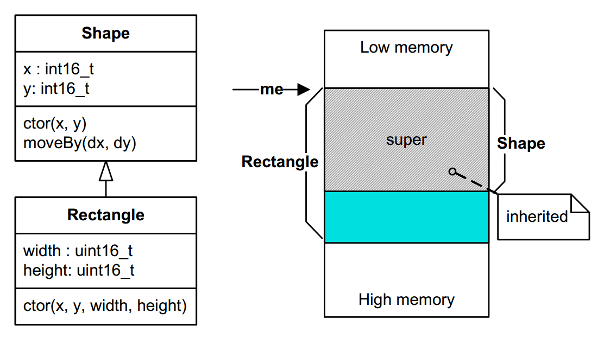
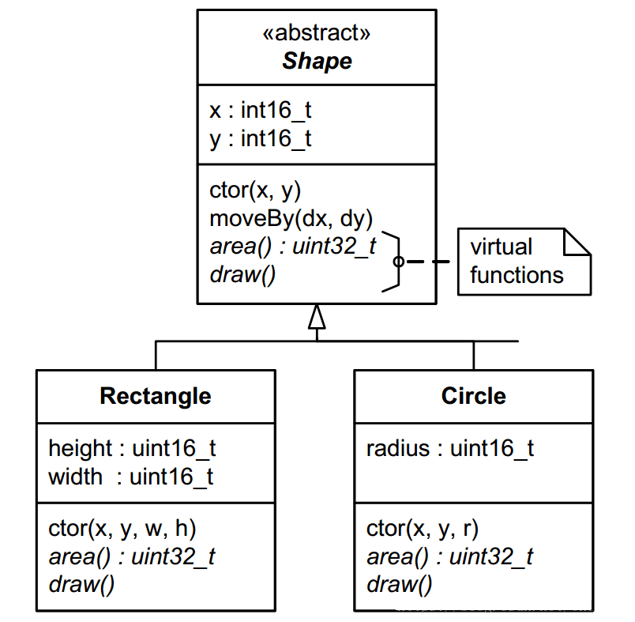
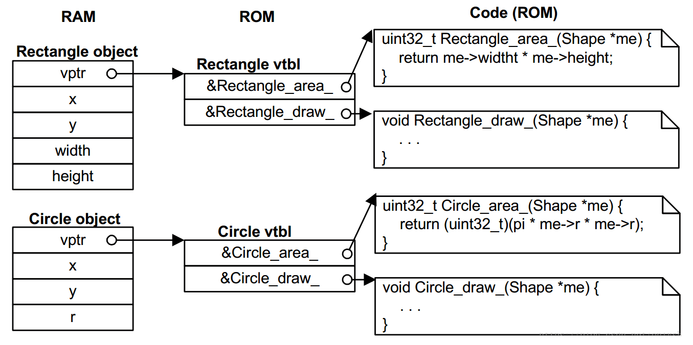

不知道有多少人去了解过语言的发展史，早期C语言的语法功能其实比较简单。随着应用需求和场景的变化，C语言的语法功能在不断升级变化。
虽然我们的教材有这么一个结论：C语言是面向过程的语言，C++是面向对象的编程语言，但面向对象的概念是在C语言阶段就有了，而且应用到了很多地方，比如某些操作系统内核、通信协议等。
面向对象编程，也就是大家说的OOP（Object Oriented Programming）并不是一种特定的语言或者工具，它只是一种设计方法、设计思想，它表现出来的三个最基本的特性就是封装、继承与多态。
阅读文本之前肯定有读者会问这样的问题：我们有C++面向对象的语言，为什么还要用C语言实现面向对象呢？
C语言这种非面向对象的语言，同样也可以使用面向对象的思路来编写程序的。只是用面向对象的C++语言来实现面向对象编程会更简单一些，但是C语言的高效性是其他面向对象编程语言无法比拟的。
当然使用C语言来实现面向对象的开发相对不容易理解，这就是为什么大多数人学过C语言却看不懂Linux内核源码。
所以这个问题其实很好理解，只要有一定C语言编程经验的读者都应该能明白：面向过程的C语言和面向对象的C++语言相比，代码运行效率、代码量都有很大差异。在性能不是很好、资源不是很多的MCU中使用C语言面向对象编程就显得尤为重要。
要想使用C语言实现面向对象，首先需要具备一些基础知识。比如：（C语言中的）结构体、函数、指针，以及函数指针等，（C++中的）基类、派生、多态、继承等。
首先，不仅仅是了解这些基础知识，而是有一定的编程经验，因为上面说了“面向对象是一种设计方法、设计思想”，如果只是停留在字面意思的理解，没有这种设计思想肯定不行。
因此，不建议初学者使用C语言实现面向对象，特别是在真正项目中。建议把基本功练好，再使用。
利用C语言实现面向对象的方法很多，下面就来描述最基本的封装、继承和多态。
封装就是把数据和函数打包到一个类里面，其实大部分C语言编程者都已近接触过了。
C 标准库中的 fopen(), fclose(), fread(), fwrite()等函数的操作对象就是 FILE。数据内容就是 FILE，数据的读写操作就是 fread()、fwrite()，fopen() 类比于构造函数，fclose() 就是析构函数。
这个看起来似乎很好理解，那下面我们实现一下基本的封装特性。
#ifndef SHAPE_H
#define SHAPE_H
#include <stdint.h>
// Shape 的属性
typedef struct {
int16_t x;
int16_t y;
} Shape;
// Shape 的操作函数，接口函数
void Shape_ctor(Shape * const me, int16_t x, int16_t y);
void Shape_moveBy(Shape * const me, int16_t dx, int16_t dy);
int16_t Shape_getX(Shape const * const me);
int16_t Shape_getY(Shape const * const me);
#endif /* SHAPE_H */
这是 Shape 类的声明，非常简单，很好理解。一般会把声明放到头文件里面 “Shape.h”。来看下 Shape 类相关的定义，当然是在 “Shape.c” 里面。
#include "shape.h"
// 构造函数
void Shape_ctor(Shape * const me, int16_t x, int16_t y)
{
me->x = x;
me->y = y;
}
void Shape_moveBy(Shape * const me, int16_t dx, int16_t dy)
{
me->x += dx;
me->y += dy;
}
// 获取属性值函数
int16_t Shape_getX(Shape const * const me)
{
return me->x;
}
int16_t Shape_getY(Shape const * const me)
{
return me->y;
}
再看下 main.c
#include "shape.h" /* Shape class interface */
#include <stdio.h> /* for printf() */
int main()
{
Shape s1, s2; /* multiple instances of Shape */
Shape_ctor(&s1, 0, 1);
Shape_ctor(&s2, -1, 2);
printf("Shape s1(x=%d,y=%d)\n", Shape_getX(&s1), Shape_getY(&s1));
printf("Shape s2(x=%d,y=%d)\n", Shape_getX(&s2), Shape_getY(&s2));
Shape_moveBy(&s1, 2, -4);
Shape_moveBy(&s2, 1, -2);
printf("Shape s1(x=%d,y=%d)\n", Shape_getX(&s1), Shape_getY(&s1));
printf("Shape s2(x=%d,y=%d)\n", Shape_getX(&s2), Shape_getY(&s2));
return 0;
}
编译之后，看看执行结果：
Shape s1(x=0,y=1) Shape s2(x=-1,y=2) Shape s1(x=2,y=-3) Shape s2(x=0,y=0)
整个例子，非常简单，非常好理解。以后写代码时候，要多去想想标准库的文件IO操作，这样也有意识的去培养面向对象编程的思维。
继承就是基于现有的一个类去定义一个新类，这样有助于重用代码，更好的组织代码。在 C 语言里面，去实现单继承也非常简单，只要把基类放到继承类的第一个数据成员的位置就行了。
例如，我们现在要创建一个 Rectangle 类，我们只要继承 Shape 类已经存在的属性和操作，再添加不同于 Shape 的属性和操作到 Rectangle 中。
下面是 Rectangle 的声明与定义：
#ifndef RECT_H
#define RECT_H
#include "shape.h" // 基类接口
// 矩形的属性
typedef struct {
Shape super; // 继承 Shape
// 自己的属性
uint16_t width;
uint16_t height;
} Rectangle;
// 构造函数
void Rectangle_ctor(Rectangle * const me, int16_t x, int16_t y,
uint16_t width, uint16_t height);
#endif /* RECT_H */
#include "rect.h"
// 构造函数
void Rectangle_ctor(Rectangle * const me, int16_t x, int16_t y,
uint16_t width, uint16_t height)
{
/* first call superclass’ ctor */
Shape_ctor(&me->super, x, y);
/* next, you initialize the attributes added by this subclass... */
me->width = width;
me->height = height;
}
我们来看一下 Rectangle 的继承关系和内存布局：
因为有这样的内存布局，所以你可以很安全的传一个指向 Rectangle 对象的指针到一个期望传入 Shape 对象的指针的函数中，就是一个函数的参数是 “Shape *”，你可以传入 “Rectangle *”，并且这是非常安全的。这样的话，基类的所有属性和方法都可以被继承类继承！
#include "rect.h"
#include <stdio.h>
int main()
{
Rectangle r1, r2;
// 实例化对象
Rectangle_ctor(&r1, 0, 2, 10, 15);
Rectangle_ctor(&r2, -1, 3, 5, 8);
printf("Rect r1(x=%d,y=%d,width=%d,height=%d)\n",
Shape_getX(&r1.super), Shape_getY(&r1.super),
r1.width, r1.height);
printf("Rect r2(x=%d,y=%d,width=%d,height=%d)\n",
Shape_getX(&r2.super), Shape_getY(&r2.super),
r2.width, r2.height);
// 注意，这里有两种方式，一是强转类型，二是直接使用成员地址
Shape_moveBy((Shape *)&r1, -2, 3);
Shape_moveBy(&r2.super, 2, -1);
printf("Rect r1(x=%d,y=%d,width=%d,height=%d)\n",
Shape_getX(&r1.super), Shape_getY(&r1.super),
r1.width, r1.height);
printf("Rect r2(x=%d,y=%d,width=%d,height=%d)\n",
Shape_getX(&r2.super), Shape_getY(&r2.super),
r2.width, r2.height);
return 0;
}
/*
输出结果：
Rect r1(x=0,y=2,width=10,height=15)
Rect r2(x=-1,y=3,width=5,height=8)
Rect r1(x=-2,y=5,width=10,height=15)
Rect r2(x=1,y=2,width=5,height=8)
*/
C++ 语言实现多态就是使用虚函数。在 C 语言里面，也可以实现多态。
现在，我们又要增加一个圆形，并且在 Shape 要扩展功能，我们要增加 area() 和 draw() 函数。但是 Shape 相当于抽象类，不知道怎么去计算自己的面积，更不知道怎么去画出来自己。而且，矩形和圆形的面积计算方式和几何图像也是不一样的。
下面让我们重新声明一下 Shape 类：
#ifndef SHAPE_H
#define SHAPE_H
#include <stdint.h>
struct ShapeVtbl;
// Shape 的属性
typedef struct {
struct ShapeVtbl const *vptr;
int16_t x;
int16_t y;
} Shape;
// Shape 的虚表
struct ShapeVtbl {
uint32_t (*area)(Shape const * const me);
void (*draw)(Shape const * const me);
};
// Shape 的操作函数，接口函数
void Shape_ctor(Shape * const me, int16_t x, int16_t y);
void Shape_moveBy(Shape * const me, int16_t dx, int16_t dy);
int16_t Shape_getX(Shape const * const me);
int16_t Shape_getY(Shape const * const me);
static inline uint32_t Shape_area(Shape const * const me)
{
return (*me->vptr->area)(me);
}
static inline void Shape_draw(Shape const * const me)
{
(*me->vptr->draw)(me);
}
Shape const *largestShape(Shape const *shapes[], uint32_t nShapes);
void drawAllShapes(Shape const *shapes[], uint32_t nShapes);
#endif /* SHAPE_H */
看下加上虚函数之后的类关系图：
5.1 虚表和虚指针
虚表（Virtual Table）是这个类所有虚函数的函数指针的集合。
虚指针（Virtual Pointer）是一个指向虚表的指针。这个虚指针必须存在于每个对象实例中，会被所有子类继承。
在《Inside The C++ Object Model》的第一章内容中，有这些介绍。
5.2 在构造函数中设置vptr
在每一个对象实例中，vptr 必须被初始化指向其 vtbl。最好的初始化位置就是在类的构造函数中。事实上，在构造函数中，C++ 编译器隐式的创建了一个初始化的vptr。在 C 语言里面， 我们必须显示的初始化vptr。
下面就展示一下，在 Shape 的构造函数里面，如何去初始化这个 vptr。
#include "shape.h"
#include <assert.h>
// Shape 的虚函数
static uint32_t Shape_area_(Shape const * const me);
static void Shape_draw_(Shape const * const me);
// 构造函数
void Shape_ctor(Shape * const me, int16_t x, int16_t y)
{
// Shape 类的虚表
static struct ShapeVtbl const vtbl =
{
&Shape_area_,
&Shape_draw_
};
me->vptr = &vtbl;
me->x = x;
me->y = y;
}
void Shape_moveBy(Shape * const me, int16_t dx, int16_t dy)
{
me->x += dx;
me->y += dy;
}
int16_t Shape_getX(Shape const * const me)
{
return me->x;
}
int16_t Shape_getY(Shape const * const me)
{
return me->y;
}
// Shape 类的虚函数实现
static uint32_t Shape_area_(Shape const * const me)
{
assert(0); // 类似纯虚函数
return 0U; // 避免警告
}
static void Shape_draw_(Shape const * const me)
{
assert(0); // 纯虚函数不能被调用
}
Shape const *largestShape(Shape const *shapes[], uint32_t nShapes)
{
Shape const *s = (Shape *)0;
uint32_t max = 0U;
uint32_t i;
for (i = 0U; i < nShapes; ++i)
{
uint32_t area = Shape_area(shapes[i]);// 虚函数调用
if (area > max)
{
max = area;
s = shapes[i];
}
}
return s;
}
void drawAllShapes(Shape const *shapes[], uint32_t nShapes)
{
uint32_t i;
for (i = 0U; i < nShapes; ++i)
{
Shape_draw(shapes[i]); // 虚函数调用
}
}
5.3 继承 vtbl 和 重载 vptr
上面已经提到过，基类包含 vptr，子类会自动继承。但是，vptr 需要被子类的虚表重新赋值。并且，这也必须发生在子类的构造函数中。下面是 Rectangle 的构造函数。
#include "rect.h"
#include <stdio.h>
// Rectangle 虚函数
static uint32_t Rectangle_area_(Shape const * const me);
static void Rectangle_draw_(Shape const * const me);
// 构造函数
void Rectangle_ctor(Rectangle * const me, int16_t x, int16_t y,
uint16_t width, uint16_t height)
{
static struct ShapeVtbl const vtbl =
{
&Rectangle_area_,
&Rectangle_draw_
};
Shape_ctor(&me->super, x, y); // 调用基类的构造函数
me->super.vptr = &vtbl; // 重载 vptr
me->width = width;
me->height = height;
}
// Rectangle's 虚函数实现
static uint32_t Rectangle_area_(Shape const * const me)
{
Rectangle const * const me_ = (Rectangle const *)me; //显示的转换
return (uint32_t)me_->width * (uint32_t)me_->height;
}
static void Rectangle_draw_(Shape const * const me)
{
Rectangle const * const me_ = (Rectangle const *)me; //显示的转换
printf("Rectangle_draw_(x=%d,y=%d,width=%d,height=%d)\n",
Shape_getX(me), Shape_getY(me), me_->width, me_->height);
}
5.4 虚函数调用
有了前面虚表（Virtual Tables）和虚指针（Virtual Pointers）的基础实现，虚拟调用（后期绑定）就可以用下面代码实现了。
uint32_t Shape_area(Shape const * const me)
{
return (*me->vptr->area)(me);
}
这个函数可以放到.c文件里面，但是会带来一个缺点就是每个虚拟调用都有额外的调用开销。为了避免这个缺点，如果编译器支持内联函数（C99）。我们可以把定义放到头文件里面，类似下面：
static inline uint32_t Shape_area(Shape const * const me)
{
return (*me->vptr->area)(me);
}
如果是老一点的编译器（C89），我们可以用宏函数来实现，类似下面这样：
#define Shape_area(me_) ((*(me_)->vptr->area)((me_)))
看一下例子中的调用机制：
5.5 main.c
#include "rect.h"
#include "circle.h"
#include <stdio.h>
int main()
{
Rectangle r1, r2;
Circle c1, c2;
Shape const *shapes[] =
{
&c1.super,
&r2.super,
&c2.super,
&r1.super
};
Shape const *s;
// 实例化矩形对象
Rectangle_ctor(&r1, 0, 2, 10, 15);
Rectangle_ctor(&r2, -1, 3, 5, 8);
// 实例化圆形对象
Circle_ctor(&c1, 1, -2, 12);
Circle_ctor(&c2, 1, -3, 6);
s = largestShape(shapes, sizeof(shapes)/sizeof(shapes[0]));
printf("largetsShape s(x=%d,y=%d)\n", Shape_getX(s), Shape_getY(s));
drawAllShapes(shapes, sizeof(shapes)/sizeof(shapes[0]));
return 0;
}
/*
输出结果：
largetsShape s(x=1,y=-2)
Circle_draw_(x=1,y=-2,rad=12)
Rectangle_draw_(x=-1,y=3,width=5,height=8)
Circle_draw_(x=1,y=-3,rad=6)
Rectangle_draw_(x=0,y=2,width=10,height=15)
*/
还是那句话，面向对象编程是一种方法，并不局限于某一种编程语言。用 C 语言实现封装、单继承，理解和实现起来比较简单，多态反而会稍微复杂一点，如果打算广泛的使用多态，还是推荐转到 C++ 语言上，毕竟这层复杂性被这个语言给封装了，你只需要简单的使用就行了。但并不代表，C 语言实现不了多态这个特性。
参考素材：
https://blog.csdn.net/onlyshi/article/details/81672279
------------ END ------------
继承是为了实现多态，即可以把子类当父类来用。
我们一般在父类中声明接口，在子类中实现接口。所谓接口，就是一个个函数组成的集合。
思路：
用C实现继承很简单，子结构体内包含父结构体成员就可以了，把子类当父类来使用时只需要一次强制类型转换。
那么实现多重继承呢？
思路也很简单，一点就破。
沿用单继承的实现思路，我们还是像之前实现单继承那样子结构体内包含多个父结构体的所有成员，发现当作父类使用时无法像之前那样方便地利用C语言提供的强制类型转换。原因是什么？
无法将所有的父都放在结构体的开头，因为一个结构体只有一个开头，哈哈。
我们最终的目的是什么？
我们最终的目的是获取子结构体里存在的父的特性。
相比与第一个父，第二个、第三个父无非就是多了个偏移，知道了这个偏移自然就拿到了从属于父的数据。
问题就变成了怎么获取偏移，或怎么获取数据，核心其实是获取数据。
我这里用的一种方法会浪费一个字节的空间，不过胜在简单。
具体描述就是：
在父类的结构体内插入一个额外的特殊命名的标记成员。再实现一个宏，这个宏有两个参数，分别为子类对象和想转化的父类结构体名。这个宏相当于是重新实现了强制类型转化。在子类退化为父类的场合用这个宏替代之前的强制类型转换。
下面看具体的代码：
//OOC.h #ifndef _INCLUDE_OOC_H #define _INCLUDE_OOC_H typedef unsigned char OOC_START_T; //作为基类的结构体一定要有一个名为OOC_START_XXX 的成员 XXX表示结构体名 //在子类退化为父类的场合用 OOC_BASE宏代替强制类型转换 #define OOC_BASE(p_s,base) ((base*)(&p_s->OOC_START_##base)) //子类对象退化为基类对象 //在父类特化为子类的场合用OOC_SON宏代替强制类型转换 #define OOC_SON(p_b,son,base) ((son*)((char*)p_b-(char*)&((son*)0)->OOC_START_##base)) //在某些场合需要从父类对象特化为子类对象， // 比如实现了一个通用链表节点父类，通过节点访问子类属性时 #endif
//teacher.h
#ifndef _INCLUDE_TEACHER_H_
#define _INCLUDE_TEACHER_H_
#include "OOC.h"
typedef void (* teach_t)(void);
#define TEACHER_BASE \
OOC_START_T OOC_START_teacher_t;\
teach_t teaching
typedef struct techer_s
{
TEACHER_BASE;
}teacher_t;
#endif
//writer.h
#ifndef _INCLUDE_WRITER_H_
#define _INCLUDE_WRITER_H_
#include "OOC.h"
typedef void (* write_t)(void);
#define WRITER_BASE\
OOC_START_T OOC_START_writer_t;\
write_t writing
typedef struct writer_s
{
WRITER_BASE;
}writer_t;
#endif
//ryan.h
#ifndef _INCLUDE_RYAN_H_
#define _INCLUDE_RYAN_H_
#include "OOC.h"
#include "teacher.h"
#include "writer.h"
typedef struct ryan_s
{
TEACHER_BASE;
WRITER_BASE;
}ryan_t;
ryan_t * create_ryan(void);
#endif
//juliet.h
#ifndef _INCLUDE_JULIET_H_
#define _INCLUDE_JULIET_H_
#include "OOC.h"
#include "teacher.h"
#include "writer.h"
typedef struct juliet_s
{
TEACHER_BASE;
WRITER_BASE;
}juliet_t;
juliet_t * create_juliet(void);
#endif
//ryan.c
#include "ryan.h"
#include <stdio.h>
static ryan_t instance;
static void ryan_teaching(void)
{
printf("I am ryan, i teaching math !\n");
}
static void ryan_writing(void)
{
printf("I am ryan, i am a writer use pen!\n");
}
ryan_t * create_ryan(void)
{
instance.teaching = ryan_teaching;
instance.writing = ryan_writing;
return &instance;
}
//juliet.c
#include "juliet.h"
#include <stdio.h>
static juliet_t instance; //这里可以理解为单例模式，多实例的实现方式可以用堆
static void juliet_teaching(void)
{
printf("I am juliet, i teaching English !\n");
}
static void juliet_writing(void)
{
printf("I am juliet, i am a writer use computer!\n");
}
juliet_t * create_juliet(void)
{
instance.teaching = juliet_teaching;
instance.writing = juliet_writing;
return &instance;
}
//main.c
#include "OOC.h"
#include "teacher.h"
#include "writer.h"
#include "ryan.h"
#include "juliet.h"
teacher_t* p_teachers[2]={0};
writer_t* p_writers[2]={0};
void write_talk(void)
{
p_writers[0]->writing();
p_writers[1]->writing();
}
void teacher_talk(void)
{
p_teachers[0]->teaching();
p_teachers[1]->teaching();
}
int main()
{
ryan_t* p_ryan = create_ryan();
juliet_t* p_juliet = create_juliet();
p_teachers[0]= OOC_BASE(p_ryan,teacher_t);
p_teachers[1]= OOC_BASE(p_juliet,teacher_t);
p_writers[0]= OOC_BASE(p_ryan,writer_t);
p_writers[1]= OOC_BASE(p_juliet,writer_t);
write_talk();
teacher_talk();
}
上面的代码定义了老师类和作家类两个基类。Ryan 是数学老师兼用笔写作的作家。Juliet是英语老师兼用电脑创造的作家。英语不好轻喷。